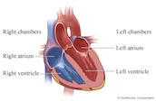
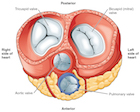

Pericardium
The pericardium is a double-walled sac containing the heart and the roots of the great vessels.
Learn More

Structure of the Heart Wall
The wall of the heart consists of three distinct layers—the epicardium (outer layer), the myocardium (middle layer), and the endocardium (inner layer).
Learn More

Chambers of the Heart
A normal heart has two upper and two lower chambers. The upper chambers receive incoming blood. The lower chambers pump blood out of your heart.
Learn More

Valves of the Heart
These tissue-paper thin membranes attached to the heart wall constantly open and close to regulate blood flow (causing the sound of a heartbeat).
Learn More
Pericardium:
The heart sits within a fluid-filled cavity called the pericardial cavity. The walls and lining of the pericardial cavity are a special membrane known as the pericardium. Pericardium is a type of serous membrane that produces serous fluid to lubricate the heart and prevent friction between the ever beating heart and its surrounding organs. Besides lubrication, the pericardium serves to hold the heart in position and maintain a hollow space for the heart to expand into when it is full. The pericardium has 2 layers—a visceral layer that covers the outside of the heart and a parietal layer that forms a sac around the outside of the pericardial cavity.
Structure of the Heart Wall:
The heart wall is made of three layers: epicardium, myocardium and endocardium.
•Epicardium: The epicardium is the outermost layer of the heart wall and is just another name for the visceral layer of the pericardium. Thus, the epicardium is a thin layer of serous membrane that helps to lubricate and protect the outside of the heart. Below the epicardium is the second, thicker layer of the heart wall, the myocardium.
•Myocardium: The myocardium is the muscular middle layer of the heart wall that contains the cardiac muscle tissue. Myocardium makes up the majority of the thickness and mass of the heart wall and is the part of the heart responsible for pumping blood. Below the myocardium is the thin endocardium layer.
•Endocardium: Endocardium is the simple squamous endothelium layer that lines the inside of the heart. The endocardium is very smooth and is responsible for keeping blood from sticking to the inside of the heart and forming potentially deadly blood clots.


The thickness of the heart wall varies in different parts of the heart. The atria of the heart have a very thin myocardium because they do not need to pump blood very far—only to the nearby ventricles. The ventricles, on the other hand, have a very thick myocardium to pump blood to the lungs or throughout the entire body. The right side of the heart has less myocardium in its walls than the left side because the left side has to pump blood through the entire body while the right side only has to pump to the lungs.
Chambers of the Heart:
The heart contains 4 chambers: the right atrium, left atrium, right ventricle, and left ventricle. The atria are smaller than the ventricles and have thinner, less muscular walls than the ventricles. The atria act as receiving chambers for blood, so they are connected to the veins that carry blood to the heart. The ventricles are the larger, stronger pumping chambers that send blood out of the heart. The ventricles are connected to the arteries that carry blood away from the heart.
The chambers on the right side of the heart are smaller and have less myocardium in their heart wall when compared to the left side of the heart. This difference in size between the sides of the heart is related to their functions and the size of the 2 circulatory loops. The right side of the heart maintains pulmonary circulation to the nearby lungs while the left side of the heart pumps blood all the way to the extremities of the body in the systemic circulatory loop.

Valves of the Heart:
The heart functions by pumping blood both to the lungs and to the systems of the body. To prevent blood from flowing backwards or “regurgitating” back into the heart, a system of one-way valves are present in the heart. The heart valves can be broken down into two types: atrioventricular and semilunar valves.
•Atrioventricular valves: The atrioventricular (AV) valves are located in the middle of the heart between the atria and ventricles and only allow blood to flow from the atria into the ventricles. The AV valve on the right side of the heart is called the tricuspid valve because it is made of three cusps (flaps) that separate to allow blood to pass through and connect to block regurgitation of blood. The AV valve on the left side of the heart is called the mitral valve or the bicuspid valve because it has two cusps. The AV valves are attached on the ventricular side to tough strings called chordae tendineae. The chordae tendineae pull on the AV valves to keep them from folding backwards and allowing blood to regurgitate past them. During the contraction of the ventricles, the AV valves look like domed parachutes with the chordae tendineae acting as the ropes holding the parachutes taut.
•Semilunar valves: The semilunar valves, so named for the crescent moon shape of their cusps, are located between the ventricles and the arteries that carry blood away from the heart. The semilunar valve on the right side of the heart is the pulmonary valve, so named because it prevents the backflow of blood from the pulmonary trunk into the right ventricle. The semilunar valve on the left side of the heart is the aortic valve, named for the fact that it prevents the aorta from regurgitating blood back into the left ventricle. The semilunar valves are smaller than the AV valves and do not have chordae tendineae to hold them in place. Instead, the cusps of the semilunar valves are cup shaped to catch regurgitating blood and use the blood’s pressure to snap shut.
.jpg)